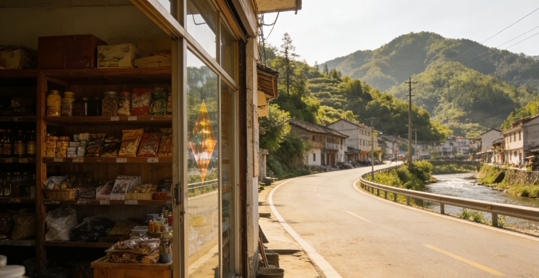
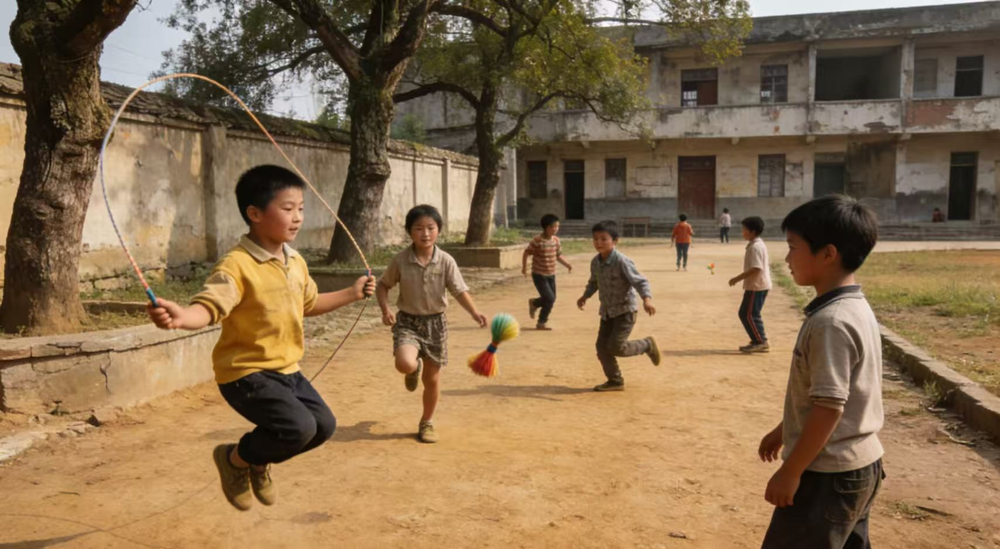
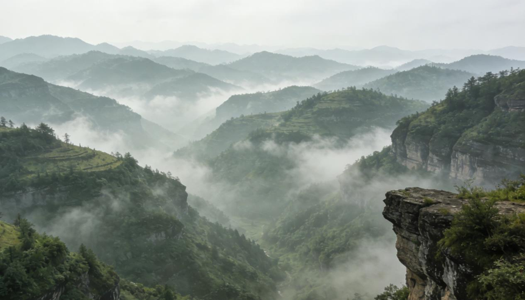

湘水市地处浙江省境内，全市山区面积占比高达56%，地形以连绵的山地、丘陵为主，平坦土地极少。这种地理条件让当地搞基础建设难度特别大——公路只能依山而修，弯多坡陡，不少乡镇之间还要靠山路连通；水电、网络等设施也没法像大城市那样全覆盖，很多村子得靠自备发电机应急。

由于耕地少，农业种植条件一直很差，只能在陡坡上开垦零星梯田，种些红薯、玉米、土豆这类耐贫瘠的作物，产量不高，很难支撑稳定收入。当地工业基础薄弱，像样的工厂很少，居民收入普遍不高，整体受教育程度偏低——山里孩子上学要走几小时山路，学校规模小、设备简陋，很多孩子读到初中就不得不辍学，帮家里干活或外出打工。

2008年的湘水市，经济发展相对滞后，但自然风光保留着原生态的样子。市内有几处景区，其中临天崖景区是名气最大的3A级景区。这里山势险峻，崖壁陡峭，常年云雾缭绕，站在观景台能俯瞰整座山城，景色十分壮观。不过景区交通不便，只有少数游客专程前来，大多是本地人和偶尔的驴友。

湘水市雨季多泥石流。每年5—9月是当地雨季，雨水多且集中，加上山地土层疏松、植被覆盖有限，很容易引发泥石流。如果有人想来旅游，一定要避开雨季，出行前先打听当地天气；若恰逢雨季，千万不要贸然前往深山或景区，尽量选择平坦区域活动，同时听从当地向导的提醒，注意安全。
总的来说，2008年的湘水市，是一个山多路差、经济落后，但山水原生态、风景独特的山区小城，只是雨季安全风险较高，出行需格外留意。